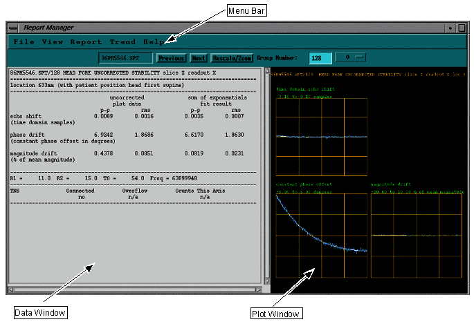
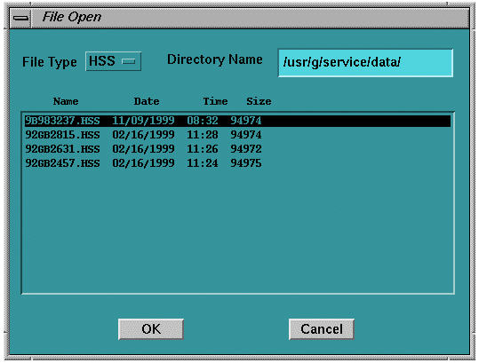
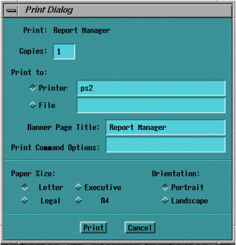
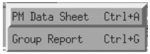
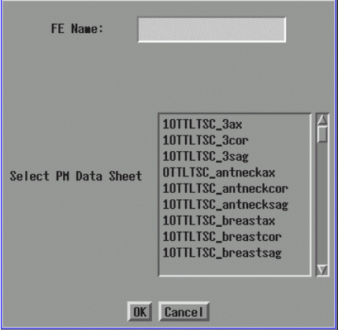
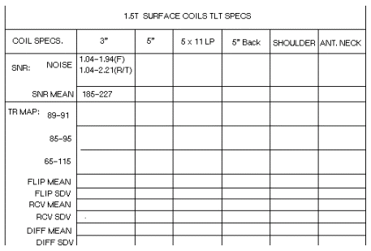

- 00000018WIA30A39F20GYZ
- id_131071241.2
- Jul 5, 2019 11:49:10 PM
Report Manager Tool
| Last Update | 10/27/2004 |
Description
The Report Manager tool is used to view MR test result data files (“T-tests”) on the Host computer.
Tool Start-Up
To open the Report Manager tool, follow the steps on the Illustration below.

When prompted for your password, type mrgo1 and press Enter.
Main Menu
When the Report Manager tool is started, the main menu (see Illustration 2) appears on the screen. The main window is divided into three parts: the menu bar, the data window and the plot window. These three windows are actually in one window, but appear as tiled windows. The menu bar, which appears on the top of the main screen, allows you to select different data manipulation and display options. The five selections are File, View, Report, Trend, and Help. Each option has its own pull-down sub-menu with a further breakdown of tasks. The data window, which provides data visualization, trend analysis and an auto-data sheet generator, has the capability to scroll both in vertical and horizontal directions. The plot windows can display up to four plots per group (also called page).

File Menu
The File menu has a pull-down sub-menu as shown in Illustration 3. The available choices are: Open, Print, and Quit. Choose Open when the tool is started to display the list of available test files.

Open
Selecting Open launches a window like the one below. The default directory name is displayed along with the test file names residing in that directory (/usr/g/service/data on the host computer). Select a file by highlighting the file name and selecting the OKbutton. The contents of the file will be displayed in the data window. The data directory can be changed from the default by typing a different directory name. The Open option can also be selected by pressing Ctrl + O.

This option prints a particular report file or prints the screen to the default media. The media can be a printer or a postscript file. This application uses the system’s default printer. The Print Dialog box is shown in Illustration 5.

Quit
When you select Quit, the Report Manager will exit after prompting you for confirmation. The confirmation dialog box is shown in Illustration 6. You can also select this option by pressing Ctrl + Q.
View Menu
The test files usually consist of several groups. A group consists of data and may contain one or more plots. The group is then displayed on the Main Menu Bar (refer to Illustration 7). Use the View option to navigate within the selected test file by selecting the Next and Previous buttons. By default, the group numbering starts at zero in each test file. The application also displays all the valid group numbers for the selected test file.
Report Menu
This option is used to generate two types of reports (refer to Illustration 8). The “T-test” data sheets can be generated automatically.

PM Data Sheets
This option is used to automatically fill in a PM data sheet from a “T-test” data file (see Illustration 9). The user selects a PM data sheet name, provides his/her name, and the tool then automatically fills the blanks in that file and displays the data in the data display area.
For example, to choose the 1.0T SST Head data sheet, select 10tSSTh. Refer to Table 3-1 (1.0T) and Table 3-2 (1.5T) for the list of data sheets on the system. An example of the PM data sheet is shown in Illustration 10. The PM data sheets can also be generated by pressing Ctrl + A.


| FILENAME | DESCRIPTION |
| 10TTLTSC_3ax/cor/sag | 1.0T TLT 3 inch coil axial/coronal/sagittal |
| 10TTLTSC_antneckax/cor/sag | 1.0T TLT Anterior neck coil axial/coronal/sagittal |
| 10TTLTSC_breastax/cor/sag | 1.0T TLT Breast coil axial/coronal/sagittal |
| 10TTLTSC_gpflexax/cor/sag | 1.0T TLT GPFlex Coil axial/coronal/sagittal |
| 10TTLTSC_qcspax/cor/sag | 1.0T Quadscp Coil axial/coronal/sagittal |
| 10TTLTSC_qextax/cor/sag | 1.0T TLT Quad Extremity Coil axial/coronal/sagittal |
| 10TTLTSC_qtlax/cor/sag | 1.0T TLT Quad T/L Coil axial/coronal/sagittal |
| 10TTLTSC_shldax/cor/sag | 1.0T TLT Shoulder Coil axial/coronal/sagittal |
| 10rfth_BY | 1.0T RFT - Head |
| 10rfth_EN | 1.0T RFT - Head |
| 10rftb_BY | 1.0T RFT - Body |
| 10rftb_EN | 1.0T RFT - Body |
| 10SSTb | 1.0T SST - Body |
| 10SSTh | 1.0T SST - Head |
| 10ttlth | 1.0T TLT - Head |
| 10ttltb | 1.0T TLT - Body |
| 10ttltb_ox | 1.0T TLT - Body (oxford) |
| 10ttlth_ox | 1.0T TLT - Head (oxford) |
| FILENAME | DESCRIPTION |
| 15TTLTSC_3ax/cor/sag | 1.5T TLT 3 inch axial/coronal/sagittal |
| 15TTLTSC_5bkax/cor/sag | 1.5T TLT 5X11 coil axial/coronal/sagittal |
| 15TTLTSC_5gpax/cor/sag | 1.5T TLT 5 inch General Purpose coil axial/coronal/ sagittal |
| 15TTLTSC_antneckax/cor/sag | 1.5T TLT Anterior neck coil axial/coronal/sagittal |
| 15TTLTSC_lpax/cor/sag | 1.5T TLT LP Coil axial/coronal/sagittal |
| 15ttltpa_bpax/cor/sag | 1.5T TLT Phased Array Breast Coil axial/coronal/sagittal |
| 15TTLTSC_shldrax/cor/sag | 1.5T TLT Shoulder Coil axial/coronal/sagittal |
| 15ttltpa_ctlax/cor/sag | 1.5T TLT Phased Array CTL coil axial/coronal/sagittal |
| 15ttltpa_dlax/cor/sag | 1.5T TLT Dual Flex coil axial/coronal/sagittal |
| 15ttltpa_plvax/cor/sag | 1.5T TLT Phased Array Pelvic coil axial/coronal/sagittal |
| 15rfth_by | 1.5T RFT - Head |
| 15rfth_en | 1.5T RFT - Head |
| 15rftb_by | 1.5T RFT - Body |
| 15rftb_en | 1.5T RFT - Body |
| 15SSTb | 1.5T SST - Body |
| 15SSTh | 1.5T SST - Head |
| 15ttlth | 1.5T TLT - Head |
| 15ttltb | 1.5T TLT - Body |
| 15ttltb_ox | 1.5T TLT - Body (oxford) |
| 15ttlth_ox | 1.5T TLT - Head (oxford) |
Group Report
The group report allows you to report all the groups in the test file at one time, or specify which groups to display. You can specify your name and select the groups that need to be included in the report. The tool will then display the group report in the data display area. This option can also be selected by pressing Ctrl + G.